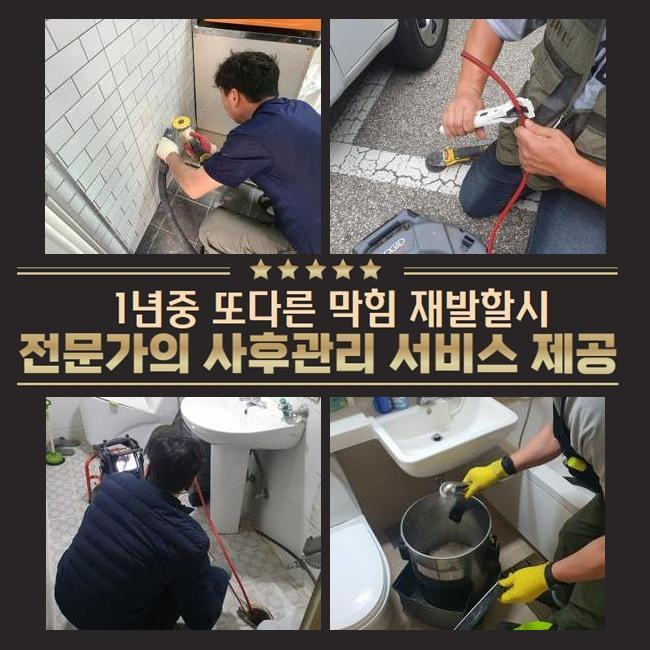
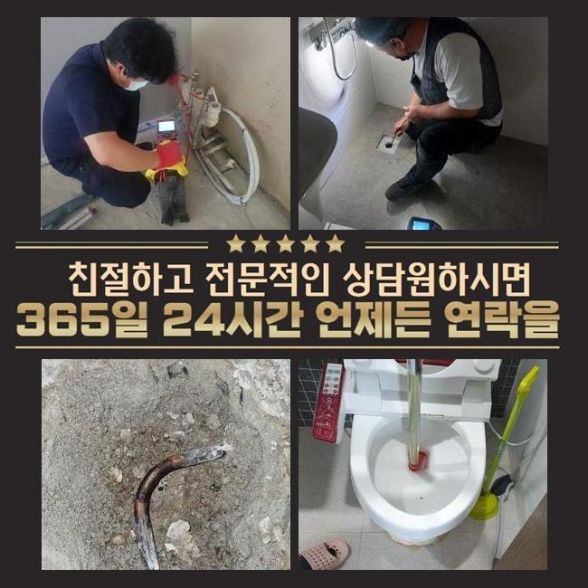
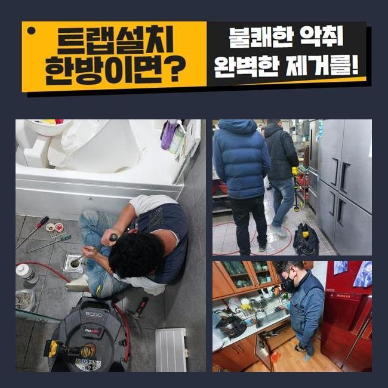
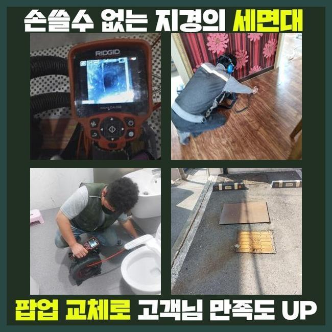
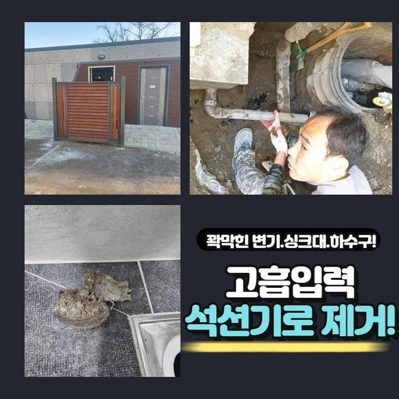
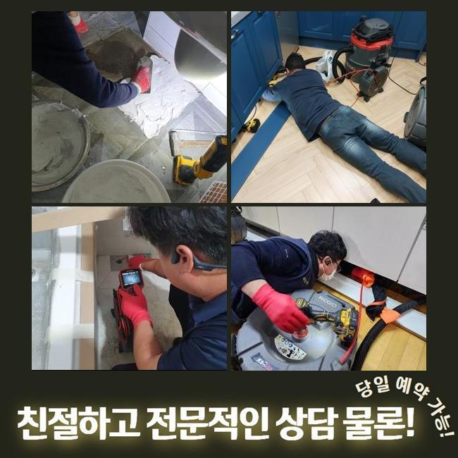

🏠 안산 중앙동오수관뚫음 초지동 집수정청소 설비출장
안산 중앙동 배관막힘 전문 시공 후기

📋 작업 개요
- 위치: 안산 중앙동, 중앙동, 안산
- 서비스 유형: 배관막힘, 집수정막힘, 역류해결, 뚫는업체, 배관청소, 고압세척
- 작업 일시: 2025. 3. 25. 10:04
- 업체명: 하수구수사대 (010-5615-2118)
🔍 문제 상황
안산 중앙동오수관뚫음 초지동 집수정청소 설비출장
저희들은 얼마전 상가건축물의 통수오류를 해결할 목적으로 내방했는데요
상가관리를 도맡았던 고객분의 안내를 그리하여 저희의경우 상업시설의 화장실내에서 감당하기 힘든 이물질 역류 배수정체를 해결하고자 도착했죠
의뢰인은 이것때문에 여러가지의 불편호소를 계속 받고 계셨어요
현재의 사태들을 안정적으로 조치해줘야했기에 저희업체는 도착 후 이곳저곳을 살폈습니다
여지껏 축적되는 슬러지가 배수구를 좁힌것을 목격하고 조속하게 고쳐냈는데요
앞선 현장으로 판단해보니 이런 오염물들은 대다수 공동배수관에서 관찰되기에 오늘과 같은 문제들이 야기되지 않았나 판단했는데요
그렇기에 조속하게 밖으로 자리를 옮겨 증상을 발현하는 하수관의 지점을 확인하고자 검사를 이행했는데요
탐지기기를 이용하여 배관의 스팟을 특정했고 내부를 바라보니 오염된 정도가 심각했던 모습이였어요
수전 등에 누적된 부유물들의 찌꺼기들과 바깥에서 쏟아진 폐기물들도 마구잡이로 혼합되었죠

🔎 원인 분석
💡 전문가 진단: 정밀 진단 장비를 사용하여 슬러지의 고착 여부를 판명하고 타격/세척 작업을 실시했습니다.
이러한 배수정체를 시정해내고자 서둘러 적합한 대처를 이행했고 상가빌딩의 시설을 안정적으로 유지되게끔 하였습니다
관로에 잔해가 누적될 시 많은 통수오류를 일으키므로 골든타임을 사수하는게 필요하죠
진단을 실시하니 잔해가 넓은 범위에 자리잡은걸 체크했죠
오염원은 계속해서 누적되면서 돌과 같이 딱딱해져 있었죠
여러원인이 중첩되어 막히는 오류가 생겨났다 판단했죠
그렇기에, 장치 사용을 해서 배수구를 청소해주었어요
장비들을 통해 하수관을 시공한다면 고압노즐분사가 중요한데요
예를들어 메인관로에 잔해가 자리하고 있으면 평상시의 해결책으로는 개선이 안될수 있는데요
그러므로, 고압노즐을 이용해 안전하게 내부오염원들을 제거시키는게 실시되야했습니다
세척을 거치면 배수구를 청결하게 보존가능하고 결함이 쌓이는 것을 사전에 예방합니다
그러므로, 하수관을 시공하는 시점에는 고압노즐분사를 고려해보는것도 추천드려요

🔧 작업 과정
덧붙여 잔해물이 누적되지 않을 정도로 주기성을 갖춘 청소해주는게 필요하고 알맞게 조치해주면 쉽게 막힘들을 해결할 수 있습니다
그러므로 오류가 발생했을 때는 명확한 해결책이 필요하고 전문진의 도움으로 튼튼한 배수환경을 유지해주시는 것이 중요하겠습니다
관리해주는게 요구되지만 전문가와 협심하여 배관을 청결하게 유지시키는게 실질적인 방책으로 다가올 수 있죠
모든 과정을 문제없이 진행시키기 위해선 구조적설계와 특성들을 알고 있어야 하죠
배수관은 여러개의 소재로 구성되며 기간이 지나면서 내구성들이 떨어지기에 쎈 압력들을 이용하는건 좋지않죠
배수관의 컨디션과 위험요소들을 인지하고 알맞은 방법들을 운용하는게 기본이에요
해당 사항들을 꼼꼼히 체크하면 고수압의 방식으로 원하는 결과들을 얻게되실거에요
사용된 석션장치는 강한 흡입으로 하수관의 잔해물을 안전하게 없애주었습니다
석션통에 흡입된 부유물들의 잔재들을 확인하였고 내시경을 투입시켜 깊은 지점을 살펴보니 아직 이물들이 상당해 배수과정이 순탄치 않았습니다
그렇기에 고압수청소로 저희전문진은 해당 장소에서 발생한 배수정체를 조속하고 안전하게 해결함과 동시에 구조상태와 이물의 양상을 고려해서 시공을 해주어 수월한 배수상황을 유지시켰죠
이것은 대다수 이물들이 깊은곳에 쌓인까닭에 야기되는 문제들로 배수공간이 협소하여 유수흐름들이 멈추는 형상이 우리 앞에 다가옵니다
심각성이 두드러지면 전문진의 능력을 바탕으로 내시경도구를 사용해 깊숙한 부분까지 검수하고 근간이 되는 까닭들을 없애주는것이 이행되어야해요
고압수청소를 이어가며 저희전문진은 진입부로 호스들을 이용했고 2M 지점에선 슬러지들이 한꺼번에 제거되는것을 보게되었어요
반대로 기름뭉치가 자리하고있는 3미터 위치에서는 내구성의 상황들을 확인해주고 물줄기들의 압력을 주시하며 청소들을 진행시켰죠
이물들의 고착정도들이 심했기에 온수 고압노즐 분사를 진행했는데 안전성과 관련된 요소들을 상기시키며 기름때들을 처리했죠
배수정체의 경우 불현듯 발생해 때론 감당하기 힘든 고충을 불러일으킵니다
배수관의 결함들은 주로 흡착물들이 점차 쌓여 발발하므로 한시라도 빨리 통수오류를 해결하는게 좋습니다


✅ 작업 완료
의뢰자의 불편해소를 위하여 신속하게 대처해드릴게요
막힘들을 조사하고 올바른 방법들을 정하여 작업에 심혈을 기울이죠
신속한 대응들이 중요하므로 장기간 방임하시면 안됩니다
해결책들이 필요할땐 시간 상관없이 의뢰해보세요!
트러블들이 발생하면 조속히 대응하여 안전성을 갖추고 온전한 컨디션을 선사하겠습니다




⚠️ 하수구 배관 막힘 예방 및 관리 가이드
- ✅ 머리카락, 비닐, 물티슈 등 물에 분해되지 않는 이물질은 하수구 유입을 절대 금지해 주세요.
- ✅ 하수구 거름망을 씌우고 모여진 이물질은 주기적으로 쓰레기통에 바로 비워주셔야 합니다.
- ✅ 배관 노후가 심할 경우 이물질이 더 쉽게 걸리므로 주기적인 배관 세척(고압세척 등)을 권장합니다.
- ✅ 작업 후 1년 이내 재발 시 하수구수사대에서 무상 A/S 보증 서비스를 제공합니다.
💡 핵심 정리
- 확실한 장비 작업(내시경 점검 및 샤프트 스케일링)으로 원인을 뿌리 뽑습니다.
- 작업 후 1년 이내에 동일한 부위 재발 시 100% 무상 A/S 서비스를 보장합니다.
- 서울 · 경기 · 인천 전 지역에 24시간 언제든 긴급 출동할 수 있도록 항시 대기 중입니다.
❓ 자주 묻는 질문 (FAQ)
🚨 안산 중앙동 배관막힘 문제로 고민이신가요?
정확한 원인 진단과 확실한 시공으로 재발 없는 해결을 약속드립니다.
24시간 긴급 출동 | 서울 · 경기 · 인천 전지역 | 1년 내 재발 시 무상 A/S